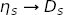

Annotated Example: Transition Form Factor¶
Introduction¶
Here we describe a complete Python code that uses corrfitter
to calculate the transition matrix element or form factor from
an  meson to a
meson to a  meson, together with the masses and amplitudes
of these mesons. A very similar code could be used to calculate
mixing amplitudes, such as for B mixing.
meson, together with the masses and amplitudes
of these mesons. A very similar code could be used to calculate
mixing amplitudes, such as for B mixing.
This example combines data from two-point correlators, for the
amplitudes and energies, with data from three-point correlators,
for the transition matrix element. We fit all of the correlators
together, in a single fit, in order to capture correlations between
the various output parameters. The correlations are built into
the output parameters and consequently are reflected in any
arithmetic combination of parameters — no bootstrap is needed to
calculate correlations or their impact on quantities derived
from the fit parameters. The best-fit parameters (in fit.p and
fit.transformed_p) are objects of type gvar.GVar.
Staggered quarks are used in
this simulation, so the has oscillating components as well as
normal components in its correlators.
The source code (etas-Ds.py) and data file
(etas-Ds.data) are included with the corrfitter distribution,
in the examples/ directory. The data are from the HPQCD collaboration.
Code¶
The main method for this code follows the pattern described
in Basic Fits:
from __future__ import print_function # makes this work for python2 and 3
import collections
import gvar as gv
import numpy as np
from corrfitter import CorrFitter, Corr2, Corr3, read_dataset
DISPLAYPLOTS = True # display plots at end of fitting?
try:
import matplotlib
except ImportError:
DISPLAYPLOTS = False
def main():
data = make_data('etas-Ds.data')
fitter = CorrFitter(models=make_models())
p0 = None
for N in [1, 2, 3, 4]:
print(30 * '=', 'nterm =', N)
prior = make_prior(N)
fit = fitter.lsqfit(data=data, prior=prior, p0=p0)
p0 = fit.pmean
print_results(fit, prior, data)
if DISPLAYPLOTS:
fitter.display_plots()
if __name__ == '__main__':
main()
The raw Monte Carlo data is in a file named 'etas-Ds.data'. We are doing
four fits, with 1, 2, 3, and 4 terms in the fit function. Each fit starts its
minimization at point p0, which is set equal to the mean values of the
best-fit parameters from the previous fit (p0 = fit.pmean). This reduces
the number of iterations needed for convergence in the N = 4 fit, for
example, from 217 to 24. It also makes multi-term fits more stable.
The last line of main()
displays plots of the fit data divided by the fit, provided
matplotlib is installed. A plot is made for each correlator, and the
ratios should equal one to within errors. To
move from one plot to the next press “n” on the keyboard; to move to a
previous plot press “p”; to quit the plots press “q”.
We now look at each other major routine in turn.
a) make_data¶
Method make_data('etas-Ds.data') reads in the Monte Carlo data, averages
it, and formats it for use by corrfitter.CorrFitter. The data file ('eta-Ds.data')
contains 225 lines, each with 64 numbers on it, of the form:
etas 0.305044 0.0789607 0.0331313 ...
etas 0.306573 0.0802435 0.0340765 ...
...
Each of these lines is a single Monte Carlo estimate for the
correlator on a lattice with 64 lattice points in the t direction;
there are 225 Monte Carlo estimates in all. The same file also contains
225 lines describing the meson correlator:
Ds 0.230503 0.0445531 0.00895383 ...
Ds 0.230947 0.0447479 0.00904294 ...
...
And it contains 225 lines each giving the 3-point amplitude for  where the source and sink are separated by 15 and 16 time steps on the lattice:
3ptT15 4.63494e-10 1.11333e-09 2.46993e-09 ...
3ptT15 4.85637e-10 1.15445e-09 2.59419e-09 ...
...
3ptT16 1.42457e-10 3.27314e-10 7.61508e-10 ...
3ptT16 1.47582e-10 3.4255e-10 7.95205e-10 ...
...
The first, second, third, etc. lines for each label come from the first, second, third, etc. Monte Carlo iterations, respectively; this synchronization allows the code to compute correlations between different types of data.
Function corrfitter.read_dataset() is designed to read files
in this format (among others). We use it to read the data, and
gvar.dataset.avg_data() to compute the means and covariance
matrix of the data:
def make_data(datafile):
""" Read data from datafile and average it. """
This routine returns a dictionary whose keys are the strings used to label the
individual lines in etas-Ds.data: for example,
>>> data = make_data('etas-Ds.data')
>>> print(data['Ds'])
[0.2307150(73) 0.0446523(32) 0.0089923(15) ... 0.0446527(32)]
>>> print(data['3ptT16'])
[1.4583(21)e-10 3.3639(44)e-10 ... 0.000023155(30)]
Here each entry in data is an array of gvar.GVars representing the Monte
Carlo estimates (mean and covariance) for the corresponding correlator. This
is the format needed by corrfitter.CorrFitter.
b) make_models¶
Method make_models() specifies the theoretical models that will be used
to fit the data:
def make_models():
""" Create models to fit data. """
tmin = 5
tp = 64
models = [
Corr2(
datatag='etas',
tp=tp, tdata=range(tp), tfit=range(tmin, tp-tmin),
a='etas:a', b='etas:a', dE='etas:dE'
),
Corr2(
datatag='Ds',
tp=tp, tdata=range(tp), tfit=range(tmin, tp-tmin),
a=('Ds:a', 'Dso:a'), b=('Ds:a', 'Dso:a'),
dE=('Ds:dE', 'Dso:dE'), s=(1., -1.)
),
Corr3(
datatag='3ptT15', tdata=range(16), T=15, tfit=range(tmin, 16-tmin),
a='etas:a', dEa='etas:dE', tpa=tp,
b=('Ds:a', 'Dso:a'), dEb=('Ds:dE', 'Dso:dE'), tpb=tp, sb=(1, -1.),
Vnn='Vnn', Vno='Vno'
),
Corr3(
datatag='3ptT16', tdata=range(17), T=16, tfit=range(tmin, 17-tmin),
a='etas:a', dEa='etas:dE', tpa=tp,
b=('Ds:a', 'Dso:a'), dEb=('Ds:dE', 'Dso:dE'), tpb=tp, sb=(1, -1.),
Vnn='Vnn', Vno='Vno'
)
]
Four models are specified, one for each correlator to be fit. The first two
are for the and two-point correlators, corresponding to
entries in the data dictionary with keys 'etas' and 'Ds',
respectively.
These are periodic propagators, with period 64 (tp), and we want to
omit the first and last 5 (tmin) time steps in the correlator. The
ts to be fit are listed in tfit, while the ts contained in the
data are in tdata. Labels for the fit parameters corresponding to the
sources (and sinks) are specified for each, 'etas:a' and 'Ds:a', as
are labels for the energy differences, 'etas:dE' and 'Ds:dE'. The
propagator also has an oscillating piece because this data comes from
a staggered-quark analysis. Sources/sinks and energy differences are
specified for these as well: 'Dso:a' and 'Dso:dE'.
Finally three-point models are specified for the data corresponding to
data-dictionary keys '3ptT15' and '3ptT16'. These share several
parameters with the two-point correlators, but introduce new parameters
for the transition matrix elements: 'Vnn' connecting normal states, and
'Vno' connecting normal states with oscillating states.
c) make_prior¶
Method make_prior(N) creates a priori estimates for each fit
parameter, to be used as priors in the fitter:
def make_prior(N):
""" Create priors for fit parameters. """
prior = gv.BufferDict()
# etas
metas = gv.gvar('0.4(2)')
prior['log(etas:a)'] = gv.log(gv.gvar(N * ['0.3(3)']))
prior['log(etas:dE)'] = gv.log(gv.gvar(N * ['0.5(5)']))
prior['log(etas:dE)'][0] = gv.log(metas)
# Ds
mDs = gv.gvar('1.2(2)')
prior['log(Ds:a)'] = gv.log(gv.gvar(N * ['0.3(3)']))
prior['log(Ds:dE)'] = gv.log(gv.gvar(N * ['0.5(5)']))
prior['log(Ds:dE)'][0] = gv.log(mDs)
# Ds -- oscillating part
prior['log(Dso:a)'] = gv.log(gv.gvar(N * ['0.1(1)']))
prior['log(Dso:dE)'] = gv.log(gv.gvar(N * ['0.5(5)']))
prior['log(Dso:dE)'][0] = gv.log(mDs + gv.gvar('0.3(3)'))
# V
prior['Vnn'] = gv.gvar(N * [N * ["0(1)"]])
prior['Vno'] = gv.gvar(N * [N * ["0(1)"]])
Parameter N specifies how many terms are kept in the fit functions. The
priors are specified in a dictionary prior. Each entry is an array, of
length N, with one entry for each term. Each entry is a Gaussian random
variable, specified by an object of type gvar.GVar. Here we use the fact that
gvar.gvar() can make a list of gvar.GVars from a list of strings of the form
'0.1(1)': for example,
>>> print(gv.gvar(['1(2)', '3(2)']))
[1.0(2.0) 3.0(2.0)]
In this particular fit, we can assume that all the sinks/sources
are positive, and we can require that the energy differences be positive. To
force positivity, we use log-normal distributions for these parameters by
defining priors for 'log(etas:a)', 'log(etas:dE)' ... rather than
'etas:a', 'etas:dE' ... (see Faster Fits — Postive Parameters). The a
priori values for these fit parameters are the logarithms of the values for
the parameters themselves: for example, each 'etas:a' has prior 0.3(3),
while the actual fit parameters, log(etas:a), have priors
log(0.3(3)) = -1.2(1.0).
We override the default priors for the ground-state energies in each case.
This is not unusual since dE[0], unlike the other dEs, is an energy,
not an energy difference. For the oscillating state, we require
that its mass be 0.3(3) larger than the mass. One could put
more precise information into the priors if that made sense given the goals
of the simulation. For example, if the main objective is a value for Vnn,
one might include fairly exact information about the and
masses in the prior, using results from experiment or from
earlier simulations. This would make no sense, however, if the goal is to
verify that simulations gives correct masses.
Note, finally, that a statement like
prior['Vnn'] = gv.gvar(N * [N* ['0(1)']]) # correct
is not the same as
prior['Vnn'] = N * [N * [gv.gvar('0(1)')]] # wrong
The former creates N ** 2 independent gvar.GVars, with one for each element
of Vnn; it is one of the most succinct ways of creating a large number of
gvar.GVars. The latter creates only a single gvar.GVar and uses it repeatedly for
every element Vnn, thereby forcing every element of Vnn to be equal
to every other element when fitting (since the difference between any two of
their priors is 0±0); it is almost certainly not what is desired.
Usually one wants to create the array of strings first, and then convert it to
gvar.GVars using gvar.gvar().
d) print_results¶
Method print_results(fit, prior, data) reports on the best-fit values
for the fit parameters from the last fit:
def print_results(fit, prior, data):
""" Report best-fit results. """
print('Fit results:')
p = fit.transformed_p # best-fit parameters
# etas
E_etas = np.cumsum(p['etas:dE'])
a_etas = p['etas:a']
print(' Eetas:', E_etas[:3])
print(' aetas:', a_etas[:3])
# Ds
E_Ds = np.cumsum(p['Ds:dE'])
a_Ds = p['Ds:a']
print('\n EDs:', E_Ds[:3])
print( ' aDs:', a_Ds[:3])
# Dso -- oscillating piece
E_Dso = np.cumsum(p['Dso:dE'])
a_Dso = p['Dso:a']
print('\n EDso:', E_Dso[:3])
print( ' aDso:', a_Dso[:3])
# V
Vnn = p['Vnn']
Vno = p['Vno']
print('\n etas->V->Ds =', Vnn[0, 0].fmt())
print(' etas->V->Dso =', Vno[0, 0].fmt())
# error budget
outputs = collections.OrderedDict()
outputs['metas'] = E_etas[0]
outputs['mDs'] = E_Ds[0]
outputs['mDso-mDs'] = E_Dso[0] - E_Ds[0]
outputs['Vnn'] = Vnn[0, 0]
outputs['Vno'] = Vno[0, 0]
inputs = collections.OrderedDict()
inputs['statistics'] = data # statistical errors in data
inputs.update(prior) # all entries in prior
inputs['svd'] = fit.svdcorrection # svd cut (if present)
print('\n' + gv.fmt_values(outputs))
print(gv.fmt_errorbudget(outputs, inputs))
The best-fit parameter values are stored in dictionary p=fit.transformed_p,
as are the exponentials of the log-normal parameters.
We also turn energy differences into energies using numpy‘s cummulative
sum function numpy.cumsum(). The final output is:
Fit results:
Eetas: [0.41619(12) 1.007(89) 1.43(34)]
aetas: [0.21834(16) 0.170(74) 0.30(12)]
EDs: [1.20166(16) 1.704(17) 2.29(20)]
aDs: [0.21466(20) 0.275(20) 0.52(20)]
EDso: [1.442(16) 1.65(11) 2.17(44)]
aDso: [0.0634(90) 0.080(26) 0.116(93)]
etas->V->Ds = 0.76725(76)
etas->V->Dso = -0.793(92)
Finally we create an error budget for the
and masses, for the mass difference between the and its
opposite-parity partner, and for the ground-state transition amplitudes
Vnn and Vno. The quantities of interest are specified in dictionary
outputs. For the error budget, we need another dictionary, inputs,
specifying various inputs to the calculation: the Monte Carlo data, the
priors, and the results from any svd cuts (none here). Each of these inputs
contributes to the errors in the final results, as detailed in the
error budget:
Values:
metas: 0.41619(12)
mDs: 1.20166(16)
mDso-mDs: 0.240(16)
Vnn: 0.76725(76)
Vno: -0.793(92)
Partial % Errors:
metas mDs mDso-mDs Vnn Vno
---------------------------------------------------------------
statistics: 0.03 0.01 4.51 0.09 8.60
log(etas:a): 0.00 0.00 0.11 0.01 0.39
log(etas:dE): 0.00 0.00 0.06 0.01 0.38
log(Ds:a): 0.00 0.00 0.53 0.02 0.96
log(Ds:dE): 0.00 0.00 0.44 0.02 0.59
log(Dso:a): 0.00 0.00 1.10 0.01 3.85
log(Dso:dE): 0.00 0.00 1.14 0.01 5.66
Vnn: 0.00 0.00 0.58 0.03 1.03
Vno: 0.00 0.00 4.25 0.01 3.39
svd: 0.00 0.00 0.00 0.00 0.00
---------------------------------------------------------------
total: 0.03 0.01 6.46 0.10 11.61
The error budget shows, for example, that the largest sources of uncertainty in every quantity are the statistical errors in the input data.
Results¶
The output from running the code is as follows:
============================== nterm = 1
Least Square Fit:
chi2/dof [dof] = 7.4e+03 [69] Q = 0 logGBF = -2.5405e+05
Parameters:
log(etas:a) 0 -1.38766 (30) [ -1.2 (1.0) ]
log(etas:dE) 0 -0.80364 (14) [ -0.92 (50) ]
log(Ds:a) 0 -1.35559 (20) [ -1.2 (1.0) ]
log(Ds:dE) 0 0.220836 (54) [ 0.18 (17) ]
log(Dso:a) 0 -1.7014 (16) [ -2.3 (1.0) ]
log(Dso:dE) 0 0.54320 (39) [ 0.41 (24) ]
Vnn 0,0 0.74220 (23) [ 0.0 (1.0) ]
Vno 0,0 -1.0474 (21) [ 0.0 (1.0) ] *
Settings:
svdcut/n = 1e-15/0 reltol/abstol = 1e-10/1e-10 (itns/time = 23/0.1)
============================== nterm = 2
Least Square Fit:
chi2/dof [dof] = 3 [69] Q = 6e-16 logGBF = 1531.1
Parameters:
log(etas:a) 0 -1.52065 (64) [ -1.2 (1.0) ]
1 -1.300 (15) [ -1.2 (1.0) ]
log(etas:dE) 0 -0.87643 (26) [ -0.92 (50) ]
1 -0.331 (10) [ -0.7 (1.0) ]
log(Ds:a) 0 -1.53878 (66) [ -1.2 (1.0) ]
1 -1.0798 (68) [ -1.2 (1.0) ]
log(Ds:dE) 0 0.18357 (11) [ 0.18 (17) ]
1 -0.5880 (55) [ -0.7 (1.0) ]
log(Dso:a) 0 -2.6014 (75) [ -2.3 (1.0) ]
1 -1.266 (76) [ -2.3 (1.0) ] *
log(Dso:dE) 0 0.3735 (14) [ 0.41 (24) ]
1 -0.323 (41) [ -0.7 (1.0) ]
Vnn 0,0 0.76314 (30) [ 0.0 (1.0) ]
0,1 -0.4536 (52) [ 0.0 (1.0) ]
1,0 0.0799 (73) [ 0.0 (1.0) ]
1,1 -0.25 (76) [ 0.0 (1.0) ]
Vno 0,0 -0.6796 (76) [ 0.0 (1.0) ]
0,1 0.946 (66) [ 0.0 (1.0) ]
1,0 -1.00 (13) [ 0.0 (1.0) ]
1,1 0.06 (1.00) [ 0.0 (1.0) ]
Settings:
svdcut/n = 1e-15/0 reltol/abstol = 1e-10/1e-10 (itns/time = 77/0.6)
============================== nterm = 3
Least Square Fit:
chi2/dof [dof] = 0.7 [69] Q = 0.97 logGBF = 1601.6
Parameters:
log(etas:a) 0 -1.52172 (73) [ -1.2 (1.0) ]
1 -1.81 (47) [ -1.2 (1.0) ]
2 -1.13 (20) [ -1.2 (1.0) ]
log(etas:dE) 0 -0.87662 (28) [ -0.92 (50) ]
1 -0.54 (17) [ -0.7 (1.0) ]
2 -0.82 (44) [ -0.7 (1.0) ]
log(Ds:a) 0 -1.53871 (91) [ -1.2 (1.0) ]
1 -1.290 (73) [ -1.2 (1.0) ]
2 -0.58 (33) [ -1.2 (1.0) ]
log(Ds:dE) 0 0.18370 (13) [ 0.18 (17) ]
1 -0.690 (34) [ -0.7 (1.0) ]
2 -0.49 (29) [ -0.7 (1.0) ]
log(Dso:a) 0 -2.76 (14) [ -2.3 (1.0) ]
1 -2.53 (34) [ -2.3 (1.0) ]
2 -2.11 (77) [ -2.3 (1.0) ]
log(Dso:dE) 0 0.366 (11) [ 0.41 (24) ]
1 -1.59 (54) [ -0.7 (1.0) ]
2 -0.64 (76) [ -0.7 (1.0) ]
Vnn 0,0 0.76725 (76) [ 0.0 (1.0) ]
0,1 -0.490 (32) [ 0.0 (1.0) ]
0,2 0.51 (51) [ 0.0 (1.0) ]
1,0 0.049 (37) [ 0.0 (1.0) ]
1,1 0.24 (68) [ 0.0 (1.0) ]
1,2 -0.005 (0.995) [ 0.0 (1.0) ]
2,0 -0.06 (14) [ 0.0 (1.0) ]
2,1 0.05 (1.00) [ 0.0 (1.0) ]
2,2 0.0004 (1.0000) [ 0.0 (1.0) ]
Vno 0,0 -0.793 (93) [ 0.0 (1.0) ]
0,1 0.26 (33) [ 0.0 (1.0) ]
0,2 -0.006 (841) [ 0.0 (1.0) ]
1,0 0.39 (45) [ 0.0 (1.0) ]
1,1 0.20 (95) [ 0.0 (1.0) ]
1,2 -0.006 (0.999) [ 0.0 (1.0) ]
2,0 -0.17 (92) [ 0.0 (1.0) ]
2,1 0.006 (0.999) [ 0.0 (1.0) ]
2,2 0.0007 (1.0000) [ 0.0 (1.0) ]
Settings:
svdcut/n = 1e-15/0 reltol/abstol = 1e-10/1e-10 (itns/time = 76/0.7)
============================== nterm = 4
Least Square Fit:
chi2/dof [dof] = 0.7 [69] Q = 0.97 logGBF = 1602.1
Parameters:
log(etas:a) 0 -1.52170 (73) [ -1.2 (1.0) ]
1 -1.77 (43) [ -1.2 (1.0) ]
2 -1.22 (42) [ -1.2 (1.0) ]
3 -1.31 (95) [ -1.2 (1.0) ]
log(etas:dE) 0 -0.87661 (28) [ -0.92 (50) ]
1 -0.53 (15) [ -0.7 (1.0) ]
2 -0.85 (62) [ -0.7 (1.0) ]
3 -0.62 (97) [ -0.7 (1.0) ]
log(Ds:a) 0 -1.53869 (91) [ -1.2 (1.0) ]
1 -1.290 (74) [ -1.2 (1.0) ]
2 -0.65 (39) [ -1.2 (1.0) ]
3 -1.11 (99) [ -1.2 (1.0) ]
log(Ds:dE) 0 0.18370 (13) [ 0.18 (17) ]
1 -0.689 (35) [ -0.7 (1.0) ]
2 -0.53 (32) [ -0.7 (1.0) ]
3 -0.77 (99) [ -0.7 (1.0) ]
log(Dso:a) 0 -2.76 (14) [ -2.3 (1.0) ]
1 -2.53 (33) [ -2.3 (1.0) ]
2 -2.15 (80) [ -2.3 (1.0) ]
3 -2.3 (1.0) [ -2.3 (1.0) ]
log(Dso:dE) 0 0.366 (11) [ 0.41 (24) ]
1 -1.59 (53) [ -0.7 (1.0) ]
2 -0.65 (74) [ -0.7 (1.0) ]
3 -0.7 (1.0) [ -0.7 (1.0) ]
Vnn 0,0 0.76725 (76) [ 0.0 (1.0) ]
0,1 -0.492 (33) [ 0.0 (1.0) ]
0,2 0.50 (51) [ 0.0 (1.0) ]
0,3 0.06 (1.00) [ 0.0 (1.0) ]
1,0 0.050 (42) [ 0.0 (1.0) ]
1,1 0.25 (70) [ 0.0 (1.0) ]
1,2 -0.005 (0.995) [ 0.0 (1.0) ]
1,3 -0.0007 (1.0000) [ 0.0 (1.0) ]
2,0 -0.07 (19) [ 0.0 (1.0) ]
2,1 0.05 (1.00) [ 0.0 (1.0) ]
2,2 0.0004 (1.0000) [ 0.0 (1.0) ]
2,3 -1e-05 +- 1 [ 0.0 (1.0) ]
3,0 0.002 (977) [ 0.0 (1.0) ]
3,1 0.003 (1.000) [ 0.0 (1.0) ]
3,2 3e-05 +- 1 [ 0.0 (1.0) ]
3,3 2e-07 +- 1 [ 0.0 (1.0) ]
Vno 0,0 -0.793 (92) [ 0.0 (1.0) ]
0,1 0.25 (33) [ 0.0 (1.0) ]
0,2 0.005 (845) [ 0.0 (1.0) ]
0,3 0.01 (1.00) [ 0.0 (1.0) ]
1,0 0.38 (45) [ 0.0 (1.0) ]
1,1 0.22 (95) [ 0.0 (1.0) ]
1,2 -0.004 (0.999) [ 0.0 (1.0) ]
1,3 -0.0009 (1.0000) [ 0.0 (1.0) ]
2,0 -0.17 (93) [ 0.0 (1.0) ]
2,1 0.005 (0.999) [ 0.0 (1.0) ]
2,2 0.0007 (1.0000) [ 0.0 (1.0) ]
2,3 -1e-05 +- 1 [ 0.0 (1.0) ]
3,0 -0.03 (1.00) [ 0.0 (1.0) ]
3,1 -0.003 (1.000) [ 0.0 (1.0) ]
3,2 1e-05 +- 1 [ 0.0 (1.0) ]
3,3 4e-07 +- 1 [ 0.0 (1.0) ]
Settings:
svdcut/n = 1e-15/0 reltol/abstol = 1e-10/1e-10 (itns/time = 24/0.4)
Fit results:
Eetas: [0.41619(12) 1.007(89) 1.43(34)]
aetas: [0.21834(16) 0.170(74) 0.30(12)]
EDs: [1.20166(16) 1.704(17) 2.29(20)]
aDs: [0.21466(20) 0.275(20) 0.52(20)]
EDso: [1.442(16) 1.65(11) 2.17(44)]
aDso: [0.0634(90) 0.080(26) 0.116(93)]
etas->V->Ds = 0.76725(76)
etas->V->Dso = -0.793(92)
Values:
metas: 0.41619(12)
mDs: 1.20166(16)
mDso-mDs: 0.240(16)
Vnn: 0.76725(76)
Vno: -0.793(92)
Partial % Errors:
metas mDs mDso-mDs Vnn Vno
---------------------------------------------------------------
statistics: 0.03 0.01 4.51 0.09 8.60
log(etas:a): 0.00 0.00 0.11 0.01 0.39
log(etas:dE): 0.00 0.00 0.06 0.01 0.38
log(Ds:a): 0.00 0.00 0.53 0.02 0.96
log(Ds:dE): 0.00 0.00 0.44 0.02 0.59
log(Dso:a): 0.00 0.00 1.10 0.01 3.85
log(Dso:dE): 0.00 0.00 1.14 0.01 5.66
Vnn: 0.00 0.00 0.58 0.03 1.03
Vno: 0.00 0.00 4.25 0.01 3.39
svd: 0.00 0.00 0.00 0.00 0.00
---------------------------------------------------------------
total: 0.03 0.01 6.46 0.10 11.61
Note:
This is a relatively simple fit, taking only a couple of seconds on a laptop.
Fits with only one or two terms in the fit function are poor, with
chi2/dofs that are significantly larger than one.Fits with three terms work well, and adding futher terms has almost no impact. The
chi**2does not improve and parameters for the added terms differ little from their prior values (since the data are not sufficiently accurate to add new information).The quality of the fit is confirmed by the fit plots displayed at the end (press the ‘n’ and ‘p’ keys to cycle through the various plots, and the ‘q’ key to quit the plot). The plot for the
correlator,
for example, shows correlator data divided by fit result as a
function of t:
The points with error bars are the correlator data points; the fit result is 1.0 in this plot, of course, and the dashed lines show the uncertainty in the fit function evaluated with the best-fit parameters. Fit and data agree to within errors. Note how the fit-function errors (the dashed lines) track the data errors. In general the fit function is at least as accurate as the data. It can be much more accurate, for example, when the data errors grow rapidly with
t.
Variation: Marginalization¶
Marginalization (see Faster Fits — Marginalization) can speed up fits like
this one. To use an 8-term fit function, while tuning parameters for only
N terms, we change only four lines in the main program:
def main():
data = make_data('etas-Ds.data')
models = make_models()
prior = make_prior(8)
fitter = CorrFitter(models=make_models(), ratio=False) # 1
p0 = None
for N in [1, 2]: # 2
print(30 * '=', 'nterm =', N)
prior = make_prior(8) # 3
fit = fitter.lsqfit(data=data, prior=prior, p0=p0, nterm=(N, N)) # 4
p0 = fit.pmean
print_results(fit, prior, data)
if DISPLAYPLOTS:
fitter.display_plots()
The first modification (#1) is in the definition of fitter, where we add
an extra argument to tell corrfitter.CorrFitter what kind of marginalization
to use (that is, not the ratio method). The second modification (#2)
limits the
fits to N=1,2, because that is all that will be needed to get good
values for the leading term.
The third modification (#3) sets the prior to eight terms, no matter what value
N has. The last (#4) tells fitter.lsqfit to fit parameters from
only the first N terms in the fit function; parts of the prior that are
not being fit are incorporated (marginalized) into the fit data. The output
shows that
results for the leading term have converged by N=2 (and even N=1 isn’t
so bad):
============================== nterm = 1
Least Square Fit:
chi2/dof [dof] = 0.98 [69] Q = 0.53 logGBF = 1586.4
Parameters:
log(etas:a) 0 -1.52151 (78) [ -1.2 (1.0) ]
log(etas:dE) 0 -0.87662 (29) [ -0.92 (50) ]
log(Ds:a) 0 -1.5387 (10) [ -1.2 (1.0) ]
log(Ds:dE) 0 0.18372 (14) [ 0.18 (17) ]
log(Dso:a) 0 -2.628 (25) [ -2.3 (1.0) ]
log(Dso:dE) 0 0.3738 (32) [ 0.41 (24) ]
Vnn 0,0 0.76533 (60) [ 0.0 (1.0) ]
Vno 0,0 -0.710 (11) [ 0.0 (1.0) ]
Settings:
svdcut/n = 1e-15/0 reltol/abstol = 1e-10/1e-10 (itns/time = 9/0.1)
============================== nterm = 2
Least Square Fit:
chi2/dof [dof] = 0.71 [69] Q = 0.97 logGBF = 1602.3
Parameters:
log(etas:a) 0 -1.52169 (72) [ -1.2 (1.0) ]
1 -1.81 (52) [ -1.2 (1.0) ]
log(etas:dE) 0 -0.87660 (28) [ -0.92 (50) ]
1 -0.54 (17) [ -0.7 (1.0) ]
log(Ds:a) 0 -1.53882 (88) [ -1.2 (1.0) ]
1 -1.339 (75) [ -1.2 (1.0) ]
log(Ds:dE) 0 0.18370 (13) [ 0.18 (17) ]
1 -0.711 (34) [ -0.7 (1.0) ]
log(Dso:a) 0 -2.746 (92) [ -2.3 (1.0) ]
1 -2.44 (10) [ -2.3 (1.0) ]
log(Dso:dE) 0 0.3661 (74) [ 0.41 (24) ]
1 -1.45 (24) [ -0.7 (1.0) ]
Vnn 0,0 0.76759 (74) [ 0.0 (1.0) ]
0,1 -0.488 (35) [ 0.0 (1.0) ]
1,0 0.039 (51) [ 0.0 (1.0) ]
1,1 0.63 (74) [ 0.0 (1.0) ]
Vno 0,0 -0.774 (42) [ 0.0 (1.0) ]
0,1 0.25 (16) [ 0.0 (1.0) ]
1,0 0.34 (43) [ 0.0 (1.0) ]
1,1 0.29 (95) [ 0.0 (1.0) ]
Settings:
svdcut/n = 1e-15/0 reltol/abstol = 1e-10/1e-10 (itns/time = 20/0.2)
Fit results:
Eetas: [0.41619(12) 1.00(10)]
aetas: [0.21834(16) 0.164(85)]
EDs: [1.20165(15) 1.693(17)]
aDs: [0.21463(19) 0.262(20)]
EDso: [1.442(11) 1.676(61)]
aDso: [0.0642(59) 0.0872(90)]
etas->V->Ds = 0.76759(74)
etas->V->Dso = -0.774(42)
Values:
metas: 0.41619(12)
mDs: 1.20165(15)
mDso-mDs: 0.241(11)
Vnn: 0.76759(74)
Vno: -0.774(42)
Partial % Errors:
metas mDs mDso-mDs Vnn Vno
---------------------------------------------------------------
statistics: 0.03 0.01 3.69 0.09 4.53
log(etas:a): 0.00 0.00 0.10 0.01 0.54
log(etas:dE): 0.00 0.00 0.06 0.00 0.42
log(Ds:a): 0.00 0.00 0.34 0.01 0.47
log(Ds:dE): 0.00 0.00 0.52 0.02 0.47
log(Dso:a): 0.00 0.00 0.40 0.00 1.37
log(Dso:dE): 0.00 0.00 0.54 0.00 1.94
Vnn: 0.00 0.00 1.03 0.03 0.25
Vno: 0.00 0.00 2.10 0.02 1.28
svd: 0.00 0.00 0.00 0.00 0.00
---------------------------------------------------------------
total: 0.03 0.01 4.47 0.10 5.37
Variation: Chained Fit¶
Chained fits (see Faster Fits — Chained Fits) are used if fitter.lsqfit(...)
is replaced by fitter.chained_lsqfit(...) in main(). The results
are about the same: for example,
Values:
metas: 0.41619(12)
mDs: 1.20156(17)
mDso-mDs: 0.2554(41)
Vnn: 0.7676(12)
Vno: -0.754(26)
We obtain more or less the same results,
Values:
metas: 0.41619(11)
mDs: 1.20156(15)
mDso-mDs: 0.2576(27)
Vnn: 0.76666(67)
Vno: -0.747(15)
if we polish the final results from the chained fit using
a final call to fitter.lsqfit (see Faster Fits — Chained Fits):
fit = fitter.lsqfit(data=data, prior=fit.p, svdcut=1e-4)
Another variation is to replace the last line (return models)
in make_models() by:
return [models[:2]] + models[2:]
This causes the two 2-point correlators (models[:2]) to be fit
in parallel, which makes sense since they share no parameters.
The result of the (parallel) fit of the 2-point correlators is used
as a prior for the chained fits of the 3-point correlators (models[2:]).
The fit results are mostly unchanged, although the polishing fit
is significantly faster (more than 2x) in this case:
Values:
metas: 0.41619(11)
mDs: 1.20156(15)
mDso-mDs: 0.2576(27)
Vnn: 0.76666(67)
Vno: -0.747(15)
Test the Analysis¶
We can test our analysis by adding
test_fit(fitter, 'etas-Ds.data') to the main
program, where:
def test_fit(fitter, datafile):
""" Test the fit with simulated data """
gv.ranseed((1487942813, 775399747, 906327435))
print('\nRandom seed:', gv.ranseed.seed)
dataset = read_dataset(datafile)
pexact = fitter.fit.pmean
prior = fitter.fit.prior
for sdata in fitter.simulated_data_iter(n=2, dataset=dataset, pexact=pexact):
print('\n============================== simulation')
sfit = fitter.lsqfit(data=sdata, prior=prior, p0=pexact)
diff = []
# check chi**2 for leading parameters
for k in sfit.p:
diff.append(sfit.p[k].flat[0] - pexact[k].flat[0])
chi2diff = gv.chi2(diff)
print(
'Leading parameter chi2/dof [dof] = %.2f' %
(chi2diff / chi2diff.dof),
'[%d]' % chi2diff.dof,
' Q = %.1f' % chi2diff.Q
This code does n=2 simulations of the full fit, using the means of fit
results from the last fit done by fitter as pexact.
The code prints out each fit,
and for each it computes the chi**2 of the difference between the leading
parameters and pexact. The output is:
Random seed: (1487942813, 775399747, 906327435)
============================== simulation
Least Square Fit:
chi2/dof [dof] = 0.54 [69] Q = 1 logGBF = 1606.7
Parameters:
log(etas:a) 0 -1.52148 (74) [ -1.2 (1.0) ]
1 -2.01 (56) [ -1.2 (1.0) ]
2 -1.33 (57) [ -1.2 (1.0) ]
3 -1.10 (67) [ -1.2 (1.0) ]
log(etas:dE) 0 -0.87641 (28) [ -0.92 (50) ]
1 -0.61 (20) [ -0.7 (1.0) ]
2 -1.00 (57) [ -0.7 (1.0) ]
3 -0.84 (90) [ -0.7 (1.0) ]
log(Ds:a) 0 -1.53757 (91) [ -1.2 (1.0) ]
1 -1.32 (10) [ -1.2 (1.0) ]
2 -0.81 (34) [ -1.2 (1.0) ]
3 -1.13 (98) [ -1.2 (1.0) ]
log(Ds:dE) 0 0.18390 (13) [ 0.18 (17) ]
1 -0.696 (44) [ -0.7 (1.0) ]
2 -0.71 (34) [ -0.7 (1.0) ]
3 -0.75 (99) [ -0.7 (1.0) ]
log(Dso:a) 0 -2.713 (86) [ -2.3 (1.0) ]
1 -2.38 (23) [ -2.3 (1.0) ]
2 -2.39 (95) [ -2.3 (1.0) ]
3 -2.3 (1.0) [ -2.3 (1.0) ]
log(Dso:dE) 0 0.3682 (73) [ 0.41 (24) ]
1 -1.33 (32) [ -0.7 (1.0) ]
2 -0.54 (91) [ -0.7 (1.0) ]
3 -0.7 (1.0) [ -0.7 (1.0) ]
Vnn 0,0 0.76817 (91) [ 0.0 (1.0) ]
0,1 -0.516 (38) [ 0.0 (1.0) ]
0,2 0.38 (42) [ 0.0 (1.0) ]
0,3 0.06 (99) [ 0.0 (1.0) ]
1,0 0.016 (77) [ 0.0 (1.0) ]
1,1 -0.21 (74) [ 0.0 (1.0) ]
1,2 -0.005 (990) [ 0.0 (1.0) ]
1,3 0.0009 (0.9999) [ 0.0 (1.0) ]
2,0 0.12 (34) [ 0.0 (1.0) ]
2,1 0.003 (993) [ 0.0 (1.0) ]
2,2 -0.002 (1.000) [ 0.0 (1.0) ]
2,3 3e-06 +- 1 [ 0.0 (1.0) ]
3,0 -0.52 (88) [ 0.0 (1.0) ]
3,1 0.003 (1.000) [ 0.0 (1.0) ]
3,2 -4e-06 +- 1 [ 0.0 (1.0) ]
3,3 -2e-06 +- 1 [ 0.0 (1.0) ]
Vno 0,0 -0.752 (39) [ 0.0 (1.0) ]
0,1 0.26 (20) [ 0.0 (1.0) ]
0,2 0.12 (96) [ 0.0 (1.0) ]
0,3 0.01 (1.00) [ 0.0 (1.0) ]
1,0 -0.08 (49) [ 0.0 (1.0) ]
1,1 -0.35 (95) [ 0.0 (1.0) ]
1,2 -0.01 (1.00) [ 0.0 (1.0) ]
1,3 -0.0005 (1.0000) [ 0.0 (1.0) ]
2,0 0.57 (87) [ 0.0 (1.0) ]
2,1 0.02 (1.00) [ 0.0 (1.0) ]
2,2 -0.001 (1.000) [ 0.0 (1.0) ]
2,3 -7e-05 +- 1 [ 0.0 (1.0) ]
3,0 0.11 (99) [ 0.0 (1.0) ]
3,1 0.01 (1.00) [ 0.0 (1.0) ]
3,2 -1e-05 +- 1 [ 0.0 (1.0) ]
3,3 -2e-06 +- 1 [ 0.0 (1.0) ]
Settings:
svdcut/n = 1e-15/0 reltol/abstol = 1e-10/1e-10 (itns/time = 54/0.7)
Leading parameter chi2/dof [dof] = 0.91 [8] Q = 0.5
============================== simulation
Least Square Fit:
chi2/dof [dof] = 0.81 [69] Q = 0.88 logGBF = 1596.6
Parameters:
log(etas:a) 0 -1.52324 (74) [ -1.2 (1.0) ]
1 -1.84 (24) [ -1.2 (1.0) ]
2 -0.86 (52) [ -1.2 (1.0) ]
3 -1.08 (97) [ -1.2 (1.0) ]
log(etas:dE) 0 -0.87722 (28) [ -0.92 (50) ]
1 -0.60 (11) [ -0.7 (1.0) ]
2 -0.46 (40) [ -0.7 (1.0) ]
3 -0.78 (98) [ -0.7 (1.0) ]
log(Ds:a) 0 -1.54023 (96) [ -1.2 (1.0) ]
1 -1.41 (11) [ -1.2 (1.0) ]
2 -0.77 (31) [ -1.2 (1.0) ]
3 -1.10 (98) [ -1.2 (1.0) ]
log(Ds:dE) 0 0.18346 (13) [ 0.18 (17) ]
1 -0.750 (51) [ -0.7 (1.0) ]
2 -0.70 (30) [ -0.7 (1.0) ]
3 -0.77 (99) [ -0.7 (1.0) ]
log(Dso:a) 0 -2.710 (92) [ -2.3 (1.0) ]
1 -2.46 (26) [ -2.3 (1.0) ]
2 -2.35 (90) [ -2.3 (1.0) ]
3 -2.3 (1.0) [ -2.3 (1.0) ]
log(Dso:dE) 0 0.3703 (79) [ 0.41 (24) ]
1 -1.46 (36) [ -0.7 (1.0) ]
2 -0.59 (84) [ -0.7 (1.0) ]
3 -0.7 (1.0) [ -0.7 (1.0) ]
Vnn 0,0 0.76840 (85) [ 0.0 (1.0) ]
0,1 -0.474 (38) [ 0.0 (1.0) ]
0,2 0.18 (32) [ 0.0 (1.0) ]
0,3 0.03 (99) [ 0.0 (1.0) ]
1,0 0.002 (28) [ 0.0 (1.0) ]
1,1 0.72 (58) [ 0.0 (1.0) ]
1,2 0.12 (98) [ 0.0 (1.0) ]
1,3 0.008 (1.000) [ 0.0 (1.0) ]
2,0 0.13 (20) [ 0.0 (1.0) ]
2,1 0.01 (1.00) [ 0.0 (1.0) ]
2,2 0.0009 (1.0000) [ 0.0 (1.0) ]
2,3 7e-05 +- 1 [ 0.0 (1.0) ]
3,0 0.07 (99) [ 0.0 (1.0) ]
3,1 0.001 (1.000) [ 0.0 (1.0) ]
3,2 2e-05 +- 1 [ 0.0 (1.0) ]
3,3 6e-07 +- 1 [ 0.0 (1.0) ]
Vno 0,0 -0.797 (68) [ 0.0 (1.0) ]
0,1 0.35 (24) [ 0.0 (1.0) ]
0,2 -0.04 (94) [ 0.0 (1.0) ]
0,3 -0.002 (0.999) [ 0.0 (1.0) ]
1,0 0.19 (37) [ 0.0 (1.0) ]
1,1 0.34 (94) [ 0.0 (1.0) ]
1,2 0.02 (1.00) [ 0.0 (1.0) ]
1,3 0.002 (1.000) [ 0.0 (1.0) ]
2,0 -0.21 (95) [ 0.0 (1.0) ]
2,1 -0.02 (1.00) [ 0.0 (1.0) ]
2,2 0.0002 (1.0000) [ 0.0 (1.0) ]
2,3 2e-05 +- 1 [ 0.0 (1.0) ]
3,0 -0.02 (1.00) [ 0.0 (1.0) ]
3,1 -0.002 (1.000) [ 0.0 (1.0) ]
3,2 -4e-06 +- 1 [ 0.0 (1.0) ]
3,3 2e-07 +- 1 [ 0.0 (1.0) ]
Settings:
svdcut/n = 1e-15/0 reltol/abstol = 1e-10/1e-10 (itns/time = 48/0.7)
Leading parameter chi2/dof [dof] = 1.19 [8] Q = 0.3
This shows that the fit is working well, at least for the leading parameter for each key.
Other options are easily checked. For example,
only one line need be changed in test_fit in order to test
a marginalized fit:
sfit = fitter.lsqfit(data=sdata, prior=prior, p0=pexact, nterm=(2,2))
Running this code gives:
Random seed: (623738625, 435880512, 1745400596)
============================== simulation
Least Square Fit:
chi2/dof [dof] = 0.75 [69] Q = 0.94 logGBF = 1611.8
Parameters:
log(etas:a) 0 -1.52071 (66) [ -1.2 (1.0) ]
1 -1.774 (19) [ -1.2 (1.0) ]
log(etas:dE) 0 -0.87629 (27) [ -0.92 (50) ]
1 -0.510 (16) [ -0.7 (1.0) ]
log(Ds:a) 0 -1.53874 (69) [ -1.2 (1.0) ]
1 -1.3385 (55) [ -1.2 (1.0) ]
log(Ds:dE) 0 0.18370 (11) [ 0.18 (17) ]
1 -0.7106 (58) [ -0.7 (1.0) ]
log(Dso:a) 0 -2.776 (31) [ -2.3 (1.0) ]
1 -2.417 (35) [ -2.3 (1.0) ]
log(Dso:dE) 0 0.3619 (31) [ 0.41 (24) ]
1 -1.435 (86) [ -0.7 (1.0) ]
Vnn 0,0 0.76744 (32) [ 0.0 (1.0) ]
0,1 -0.4826 (48) [ 0.0 (1.0) ]
1,0 0.0336 (76) [ 0.0 (1.0) ]
1,1 1.20 (57) [ 0.0 (1.0) ] *
Vno 0,0 -0.747 (24) [ 0.0 (1.0) ]
0,1 0.179 (47) [ 0.0 (1.0) ]
1,0 0.58 (17) [ 0.0 (1.0) ]
1,1 -0.01 (94) [ 0.0 (1.0) ]
Settings:
svdcut/n = 1e-15/0 reltol/abstol = 1e-10/1e-10 (itns/time = 8/0.1)
Leading parameter chi2/dof [dof] = 0.96 [8] Q = 0.5
============================== simulation
Least Square Fit:
chi2/dof [dof] = 0.91 [69] Q = 0.68 logGBF = 1606.2
Parameters:
log(etas:a) 0 -1.52175 (66) [ -1.2 (1.0) ]
1 -1.791 (19) [ -1.2 (1.0) ]
log(etas:dE) 0 -0.87645 (27) [ -0.92 (50) ]
1 -0.525 (16) [ -0.7 (1.0) ]
log(Ds:a) 0 -1.53891 (69) [ -1.2 (1.0) ]
1 -1.3413 (54) [ -1.2 (1.0) ]
log(Ds:dE) 0 0.18376 (11) [ 0.18 (17) ]
1 -0.7129 (58) [ -0.7 (1.0) ]
log(Dso:a) 0 -2.776 (32) [ -2.3 (1.0) ]
1 -2.425 (35) [ -2.3 (1.0) ]
log(Dso:dE) 0 0.3627 (32) [ 0.41 (24) ]
1 -1.462 (87) [ -0.7 (1.0) ]
Vnn 0,0 0.76796 (33) [ 0.0 (1.0) ]
0,1 -0.4868 (48) [ 0.0 (1.0) ]
1,0 0.0335 (74) [ 0.0 (1.0) ]
1,1 0.38 (56) [ 0.0 (1.0) ]
Vno 0,0 -0.761 (27) [ 0.0 (1.0) ]
0,1 0.200 (49) [ 0.0 (1.0) ]
1,0 0.54 (17) [ 0.0 (1.0) ]
1,1 0.16 (93) [ 0.0 (1.0) ]
Settings:
svdcut/n = 1e-15/0 reltol/abstol = 1e-10/1e-10 (itns/time = 8/0.1)
Leading parameter chi2/dof [dof] = 0.69 [8] Q = 0.7
This is also fine and confirms that nterm=(2,2) marginalized fits
are a useful, faster substitute for full fits. Indeed the simulation
suggests that the marginalized fit is somewhat more accurate
than the original fit for the oscillating-state parameters (Vno,
log(Dso:a), log(Dso:dE) — compare the simulated results with
the nterm=4 results from the original fit, as these were used to
define pexact).